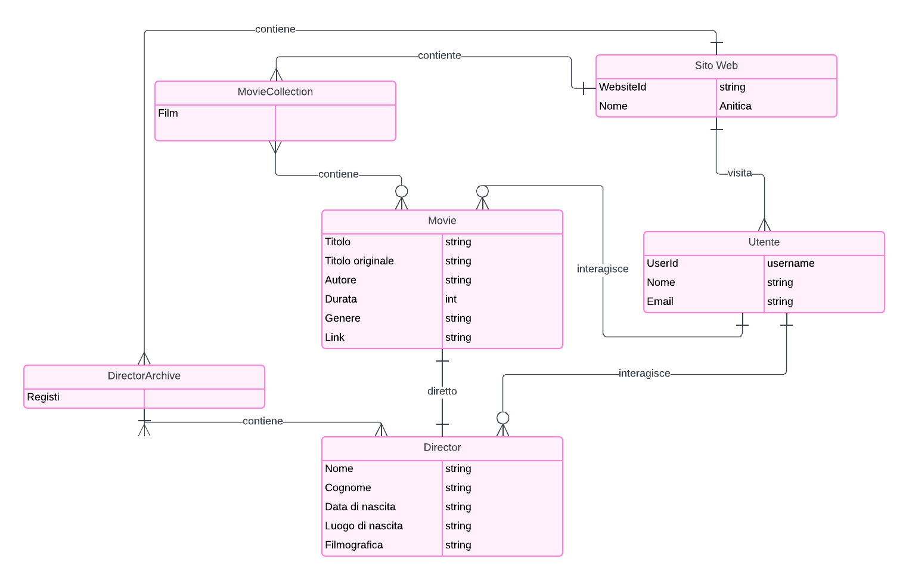

Web Project Plan
1. Brief
1.1 Finalità e obiettivi del progetto
Il sito “Anitica” si pone come risorsa utile agli studiosi, ai curiosi e agli appassionati del cinema animato Russo . Offre una panoramica sull’argomento e registri di schede e articoli informativi riguardanti film e registi in modo da rendere più facili da reperire le informazioni a riguardo dato che sono poche e molto sparse.
1.2 Pubblico di riferimento
Il sito si rivolge ad un pubblico che potrebbe essere composto da appassionati di animazione di tutte le età e provenienze, interessati a esplorare un ambito meno conosciuto come quello dell'animazione sovietica.
1.3 Accesso alla risorsa
Il sito sarà progettato per garantire un'esperienza di navigazione ottimale su una varietà di dispositivi, compresi PC, tablet e smartphone. L'interfaccia sarà responsive e user-friendly, con un design che si adatta alle dimensioni dello schermo del dispositivo in questione.
1.4 Contenuti
1.4.1 Nel prototipo
Il sito offrirà una vasta gamma di contenuti, tra cui: schede dettagliate di registi, attori e altre figure chiave del cinema Russo, articoli approfonditi sul contesto storico, culturale e artistico del cinema Russo, spiegazione dei temi trattati e dei vari riferimenti esterni.
1.4.2 Sviluppi futuri
In futuro, il sito si impegnerà a: Espandere la collezione di contenuti con nuove recensioni, analisi e approfondimenti sul cinema di animazione Russo. Proporre quiz per testare le proprie conoscenze ed entrare in un’ipotetica classifica a punti costituita dai vari utenti.
2. Benchmark
2.1 Analisi di mercato
Ad oggi non è presente su internet una collezione completa di film di animazione sovietici con vari approfondimenti relativi a questi. E come l’argomento ha suscitato curiosità in me potrebbe farlo in qualcun altro e questo sarà uno strumento utile a documentarsi.
2.2 Siti esistenti
2.2.1 Wikipedia
Pagina dedicata
2.2.2 Articoli web
Ho trovato qualche articolo che trattava nello specifico qualche regista o film durante le mie ricerche ma sono comunque relativamente brevi e spesso appartengono a siti che trattano argomenti più vasti.
2.2.3 YouTube
Su YouTube si possono trovare alcuni dei film che voglio trattare, alcuni sono molto datati e perciò è più facile reperirli
3. Struttura
3.1 Mappa concettuale

3.2 Albero delle dipendenze

3.2 Descrizione di un item foglia
- Titolo in Italiano
- Titolo originale
- Regista
- Link alla sua pagina dedicata
- Contributor
- Sceneggiatura
- Tipo
- Lungometraggio
- Corto
- Altro
- Descrizione
- Fonte
- Data di uscita
- Lingua
- Lingua originale
- Doppiaggi
- Diritti di autore(DC)
- Copyright
4. Layout
4.1 Wireframes

4.2 Homepage
In ogni pagina è presente la stessa navbar. La homepage non fa eccezioni, infatti è presente:
- • La navbar con, burgermenu a sinistra, il logo con il titolo subito dopo e sulla destra il button dedicato al login.
- • Una section introduttiva con il benvenuto, una breve introduzione al sito e la definizione di scandalo nell’arte. Inoltre è presente anche la search bar principale.
- • Una section che contiene la section hero. Dentro la section hero è presente un carousel che mostra gli ultimi scandali pubblicati.
- • La terza section è dedicata a spiegare il sito meglio attraverso le FAQ.
- • L’ultima section è dedicata al privilegio maggiore del login, ovvero la possibilità di scrivere un’articolo relativo ad uno scandalo a scelta.
4.3 Lo scandalo
Lo scandalo è l’item del progetto. È formato da due parti principali, ovvero L’articolo e l’opera d’arte. Subito sotto la navbar troviamo le “briciole di pane” adatte per tornare alle sezioni precedenti, come il catalogo e la home; quindi, per tornare alla home ho multiple scelte, ovvero cliccando il logo, il titolo oppure dal “breadcrumbs”. Lo scandalo ha l’immagine dell’opera (in sviluppi futuri dovrebbe esserci il player se l’item è un film o un player musicale se l’item è una canzone), subito notiamo sotto il titolo e la breve descrizione i button dedicati ai social. La sezione dedicata al corpo dell’articolo è sotto all’immagine, invece sulla destra troviamo delle card dedicate agli articoli più letti (in futuri aggiornamenti sarebbe ottimale implementare gli articoli consigliati in base alla profilazione dell’utente) e poi troviamo la sezione commenti.
4.4 Il catalogo
Anche qui sono presenti le “briciole di pane”. I vari articoli sono mostrati attraverso una collezione di card (prese e modificate dal template sul sito di Bootstrap). Sulla sinistra è presente una card che permette all’utente di filtrare il catalogo a seconda del periodo o attraverso una parola chiave. Inoltre permette di ordinare i risultati per ordine cronologico, ordine alfabetico e per data di pubblicazione. È presente pagination perché si prevede una quantità molto grande di articoli dato che gli stessi possono essere anche scritti dagli utenti, e visualizzarli tutti in una sola pagina creerebbe solo confusione. I cataloghi divisi in categorie hanno la stessa struttura del catalogo principale.
5. Usabilità
Il sito "Anitica" è progettato per offrire una navigazione intuitiva e piacevole. Il menu di navigazione principale è chiaramente visibile nella parte superiore di ogni pagina e consente di accedere facilmente alle sezioni Film, Registi e altre risorse chiave. Le schede informative e le collezioni sono organizzate in modo da fornire una panoramica rapida dei contenuti disponibili, mentre i collegamenti all'interno delle schede facilitano ulteriormente la navigazione. L'esperienza utente è ottimizzata per dispositivi mobili e desktop grazie al layout responsivo.
5.1 Architettura
L'architettura del sito è suddivisa in sezioni tematiche principali: Home: Offre una panoramica della storia dell'animazione sovietica, mettendo in evidenza i contenuti chiave del sito. Film Collection: Un catalogo dettagliato dei film d'animazione sovietici, completo di descrizioni, link e profili dei registi. Director Collection: Una sezione dedicata ai profili dei registi sovietici, ciascuno con biografia, filmografia e link correlati. Altro: Galleria, Chi Siamo e altre risorse sono presenti per offrire informazioni aggiuntive.
5.2 Aspetto e tipografia
Il sito utilizza un design moderno e pulito, con particolare attenzione all'aspetto visivo. La tipografia principale è costituita da caratteri sans-serif per migliorare la leggibilità. I titoli sono evidenziati in modo chiaro con dimensioni più grandi e colori distintivi per una facile identificazione. L'allineamento e gli spazi tra le sezioni migliorano la struttura visiva e rendono l'interfaccia utente più accattivante.
5.3 Colori, icone e font
La tavolozza dei colori include sfumature di blu, turchese e bianco, offrendo un contrasto gradevole e coerente: Navbar: #005f73 con bordi #0a9396 Testo primario: #333 Testo secondario: #0a9396 Le icone e i pulsanti seguono un tema simile, utilizzando icone intuitive e pulsanti con bordi arrotondati. I font principali sono Arial e sans-serif.
6. Servizi
Newsletter: Gli utenti possono iscriversi alla newsletter per ricevere aggiornamenti sui contenuti. Galleria: Una sezione dedicata a immagini e materiali multimediali correlati all'animazione sovietica. Assistenza: Una pagina di supporto per rispondere alle domande frequenti e fornire assistenza.
6.1 Strumenti di Browsing
Il sito dispone di diverse funzionalità per migliorare la navigazione:
- Ricerca: Una barra di ricerca integrata consente agli utenti di trovare rapidamente contenuti specifici.
- Breadcrumbs
- Carousel
6.2 Strumenti di Interazione
Gli strumenti di interazione disponibili includono:
- Form di Contatto: Per comunicare direttamente con il team di "Anitica".
- Newsletter: Iscrizione tramite email per ricevere contenuti esclusivi.
6.3 Sviluppi futuri
Alcuni sviluppi futuri previsti per il sito includono:
- Espansione delle Collezioni: Aggiunta di nuovi registi e film per ampliare ulteriormente la collezione.
- Galleria Multimediale: Una sezione più dettagliata dedicata a immagini, video e materiali esclusivi.
- Blog e Articoli: Una sezione per contenuti editoriali come articoli, recensioni e approfondimenti sull'animazione sovietica.
- Strumenti di Feedback: Integrazione di un sistema di valutazione per film e registi, permettendo agli utenti di esprimere la loro opinione.
7. Bibliografia
-
Per il web project plan e l'informatica umanistica
- Francesca Tomasi, Metodologie informatiche e discipline umanistiche, 2008
- Francesca Tomasi, Organizzare la conoscenza: Digital Humanities e Web semantico. Un percorso tra archivi, biblioteche e musei, 2022
- Francesca Tomasi, slide del corso di Informatica Umanistica, a.a. 2022-2023
-
Per i contenuti
- Wikipedia
- IMDB
- Internet Archive
-
Per le mappe e i wireframe
- Lucidart
- Carta e penna
Martina Dello Buono, slide per il laboratorio del corso di Informatica Umanistica, a.a. 2022-2023
Per il codice